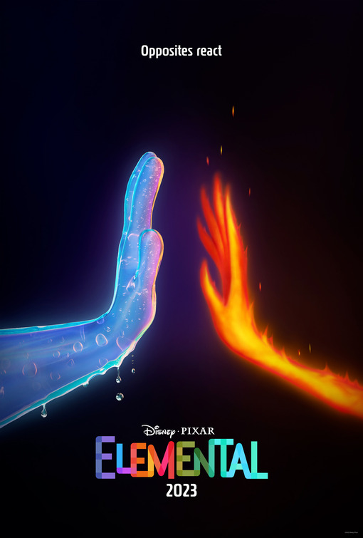

Elemental (subtitled Forces of Nature in some countries) is a 2023 American computer-animated romantic comedy-drama film produced by Walt Disney Pictures and Pixar Animation Studios and distributed by Walt Disney Studios Motion Pictures. Directed by Peter Sohn and produced by Denise Ream, it was written by Sohn, John Hoberg, Kat Likkel, and Brenda Hsueh,[a] with Pete Docter serving as executive producer. The overall 27th feature film produced by the studio, the film features the voices of Leah Lewis, Mamoudou Athie, Ronnie del Carmen, Shila Ommi, Wendi McLendon-Covey, and Catherine O'Hara. Set in a world inhabited by anthropomorphic elements of nature, the story follows fire element Ember Lumen (Lewis) and water element Wade Ripple (Athie), who meet and fall in love after Wade is summoned by a plumbing accident at a convenience store owned by Ember's father, Bernie (Del Carmen).
Following the release of The Good Dinosaur (2015), Sohn began working on the project when the idea first started. He pitched the concept to Pixar to develop Elemental based on the idea of whether fire and water could ever connect or not. Elemental draws inspiration from Sohn's youth, growing up as the son of immigrants in New York City during the 1970s, highlighting the city's distinct cultural and ethnic diversity while the story is inspired by romantic films like Guess Who's Coming to Dinner (1967), Moonstruck (1987), and Amélie (2001). For research, the production team spent many hours watching point-of-view city tours on YouTube like Venice and Amsterdam for inspiration. The animation tools were utilized to design the visual effects and appearance of each character, particularly Ember and Wade. Production on Elemental lasted for seven years, both in the studio and at the filmmakers' homes with the story being finished remotely. Thomas Newman composed and conducted the film's original score, marking his fourth collaboration with Pixar after Finding Nemo (2003), WALL-E (2008), and Finding Dory (2016).
Elemental debuted out of competition as the closing film at the 76th Cannes Film Festival on May 27, 2023, and was released in the United States on June 16 in RealD 3D, 4DX, and Dolby Cinema formats. It received praise from critics for its animation, though its screenplay was considered underwhelming.
